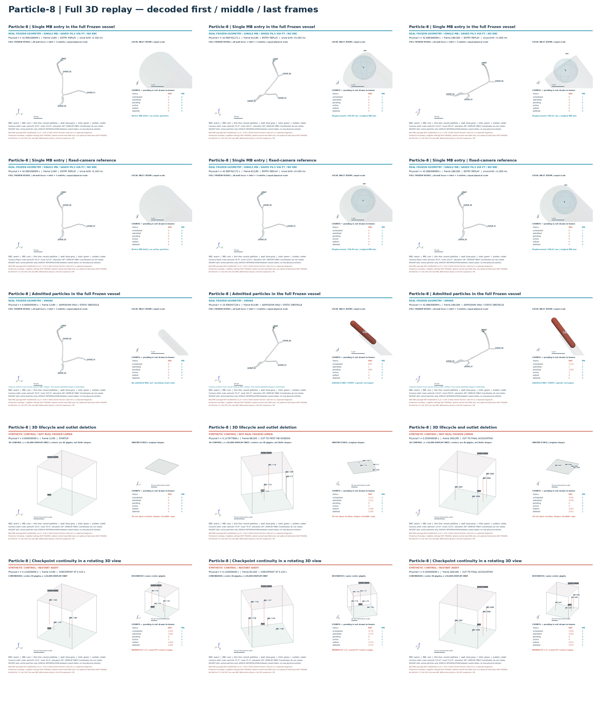
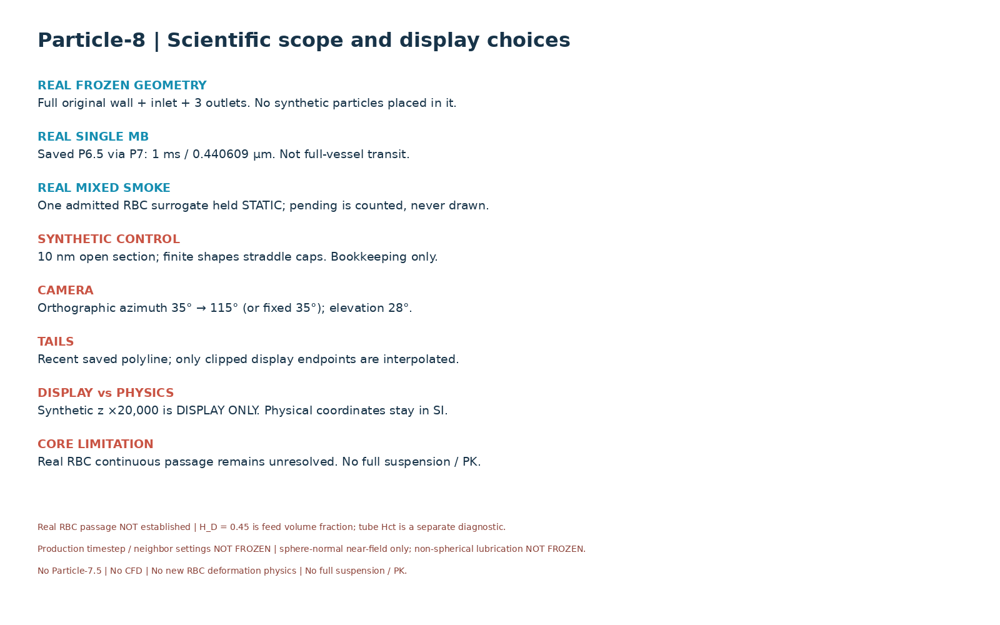

Particle-8 | 完整三维回放审核
真实 Frozen 几何与合成控制分开显示；五组动画、首中末关键帧与可追溯状态记录。
68 tests PASS · 895 MP4 frames decoded · PASS_WITH_LIMITATIONS · 用户验收待审
中文审核报告 · 机器记录 · 完整文件清单 · 逐帧 CSV
A_real_single_mb_orbit
REAL FROZEN GEOMETRY / SINGLE MB / SAVED P6.5 VIA P7 / NO RBC
真实 Frozen / 单 MB；保存状态来自 P6.5，经 P7/P8 回放。 仅入口附近 1 ms、5 个保存状态，位移约 0.440609 µm。主视图完整血管，副图保持原尺寸放大观察。
不能解释为贯穿完整血管；与 B 是独立 fixture，不能拼成真实混合输运。出生前无粒子。
MP4 · GIF · 三帧 storyboard · 逐帧记录
A_real_single_mb_fixed
REAL FROZEN GEOMETRY / SINGLE MB / SAVED P6.5 VIA P7 / NO RBC
同旋转 A，物理帧逐项一致，固定相机对照。 同一 1 ms 单 MB 保存轨迹；固定视角便于区分短距离位移与相机引起的投影变化。
固定与旋转版都只回放已有状态，不证明新时间步收敛或全血管通行。
MP4 · GIF · 三帧 storyboard · 逐帧记录
B_real_mixed_smoke_orbit
REAL FROZEN GEOMETRY / SMOKE
真实 Frozen / mixed inlet smoke；仅绘制实际 admitted 且 active 的粒子。 0–42.986308099 s。结尾 RBC scheduled=1110、admitted=active=1、pending=1109；MB scheduled=pending=1、admitted=0。
唯一 admitted RBC 是保存的静止 capsule surrogate。尾迹长度为零，不根据诊断速度制造运动。pending 从不画入血管。
MP4 · GIF · 三帧 storyboard · 逐帧记录
C_synthetic_lifecycle_orbit
SYNTHETIC CONTROL / NOT REAL FROZEN LUMEN
SYNTHETIC CONTROL / NOT REAL FROZEN LUMEN；P8 synthetic scene。 宽 200 µm、长 10 nm 的开放 section。三个连续观察窗口与最终记账帧之间有明确 CUT 标签。
最终 2356 RBC 与 2 MB admitted；2352 RBC 与 2 MB exited/deleted；4 RBC active。pending=0 是该控制案例的实际结果，未虚构排队。有限形状跨越开放端盖，不是生理通过证据。
MP4 · GIF · 三帧 storyboard · 逐帧记录
D_restart_continuity_orbit
SYNTHETIC CONTROL / RESTART AUDIT
SYNTHETIC CONTROL / RESTART AUDIT；continuous 与 restarted 两份 P8 scene。 0.124–0.126 s，checkpoint=0.125 s，并切到 0.25 s 最终记账。两视图采用相同拉伸和相机。
所有显示帧状态散列相同、mismatch=0。使用已接受的 P7 binary restart 证据缓存，本轮没有重跑物理重启或产生新解。
MP4 · GIF · 三帧 storyboard · 逐帧记录
总览与科学范围


DISPLAY-ONLY INTERPOLATION between saved states; no new solver states. Camera motion is display-only; physical coordinates and event times are unchanged. Real RBC passage NOT established | H_D = 0.45 is feed volume fraction; tube Hct is a separate diagnostic. Production timestep / neighbor settings NOT FROZEN | sphere-normal near-field only; non-spherical lubrication NOT FROZEN. No Particle-7.5 | No CFD | No new RBC deformation physics | No full suspension / PK.